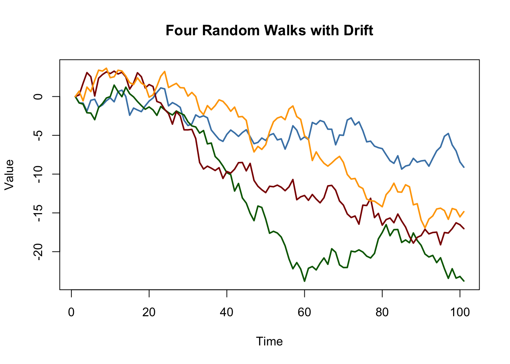

2.7 Nonstationarity I: Trends
If a series is nonstationary, conventional hypothesis tests, confidence intervals and forecasts can be strongly misleading. The assumption of stationarity is violated if a series exhibits trends or breaks and the resulting complications in an econometric analysis depend on the specific type of the nonstationarity. This section focuses on time series that exhibit trends.
A series is said to exhibit a trend if it has a persistent long-term movement. One distinguishes between deterministic and stochastic trends.
A trend is deterministic if it is a nonrandom function of time.
A trend is said to be stochastic if it is a random function of time.
The figures we have produced in Chapter 2.2 reveal that many economic time series show a trending behavior that is probably best modeled by stochastic trends. This is why the book focuses on the treatment of stochastic trends.
The Random Walk Model of a Trend
The simplest way to model a time series \(Y_t\) that has stochastic trend is the random walk \[\begin{align} Y_t = Y_{t-1} + u_t, \tag{2.6} \end{align}\] where the \(u_t\) are i.i.d. errors with \(E(u_t\vert Y_{t-1}, Y_{t-2}, \dots) = 0\). Note that \[\begin{align*} E(Y_t\vert Y_{t-1}, Y_{t-2}\dots) =& \, E(Y_{t-1}\vert Y_{t-1}, Y_{t-2}\dots) + E(u_t\vert Y_{t-1}, Y_{t-2}\dots) \\ =& \, Y_{t-1} \end{align*}\] so the best forecast for \(Y_t\) is yesterday’s observation \(Y_{t-1}\). Hence the difference between \(Y_t\) and \(Y_{t-1}\) is unpredictable. The path followed by \(Y_t\) consists of random steps \(u_t\), hence it is called a random walk.
Assume that \(Y_0\), the starting value of the random walk is \(0\). Another way to write (2.6) is \[\begin{align*} Y_0 =& \, 0 \\ Y_1 =& \, 0 + u_1 \\ Y_2 =& \, 0 + u_1 + u_2 \\ \vdots & \, \\ Y_t =& \, \sum_{i=1}^t u_i. \end{align*}\] Therefore we have \[\begin{align*} Var(Y_t) =& \, Var(u_1 + u_2 + \dots + u_t) \\ =& \, t \sigma_u^2. \end{align*}\] Thus the variance of a random walk depends on \(t\) which violates the assumption presented in Key Concept 14.5: a random walk is nonstationary.
Obviously, (2.6) is a special case of an AR(\(1\)) model where \(\beta_1 = 1\). One can show that a time series that follows an AR(\(1\)) model is stationary if \(\lvert\beta_1\rvert < 1\). In a general AR(\(p\)) model, stationarity is linked to the roots of the polynomial \[1-\beta_1 z - \beta_2 z^2 - \beta_3 z^3 - \dots - \beta_p z^p.\] If all roots are greater than \(1\) in absolute value, the AR(\(p\)) series is stationary. If at least one root equals \(1\), the AR(\(p\)) is said to have a unit root and thus has a stochastic trend.
It is straightforward to simulate random walks in R using arima.sim(). The function matplot() is convenient for simple plots of the columns of a matrix.
# simulate and plot random walks starting at 0
set.seed(1)
RWs <- ts(replicate(n = 4,
arima.sim(model = list(order = c(0, 1 ,0)), n = 100)))
matplot(RWs,
type = "l",
col = c("steelblue", "darkgreen", "darkred", "orange"),
lty = 1,
lwd = 2,
main = "Four Random Walks",
xlab = "Time",
ylab = "Value")
Adding a constant to (2.6) yields \[\begin{align} Y_t = \beta_0 + Y_{t-1} + u_t \tag{2.7}, \end{align}\] a random walk model with a drift which allows to model the tendency of a series to move upwards or downwards. If \(\beta_0\) is positive, the series drifts upwards and it follows a downward trend if \(\beta_0\) is negative.
# simulate and plot random walks with drift
set.seed(1)
RWsd <- ts(replicate(n = 4,
arima.sim(model = list(order = c(0, 1, 0)),
n = 100,
mean = -0.2)))
matplot(RWsd,
type = "l",
col = c("steelblue", "darkgreen", "darkred", "orange"),
lty = 1,
lwd = 2,
main = "Four Random Walks with Drift",
xlab = "Time",
ylab = "Value")
Problems Caused by Stochastic Trends
OLS estimation of the coefficients on regressors that have a stochastic trend is problematic because the distribution of the estimator and its \(t\)-statistic is non-normal, even asymptotically. This has various consequences:
Downward bias of autoregressive coefficients:
If \(Y_t\) is a random walk, \(\beta_1\) can be consistently estimated by OLS but the estimator is biased toward zero. This bias is roughly \(E(\widehat{\beta}_1) \approx 1 - 5.3/T\) which is substantial for sample sizes typically encountered in macroeconomics. This estimation bias causes forecasts of \(Y_t\) to perform worse than a pure random walk model.
Non-normally distributed \(t\)-statistics:
The nonnormal distribution of the estimated coefficient of a stochastic regressor translates to a nonnormal distribution of its \(t\)-statistic so that normal critical values are invalid and therefore usual confidence intervals and hypothesis tests are invalid, too, and the true distribution of the \(t\)-statistic cannot be readily determined.
Spurious Regression:
When two stochastically trending time series are regressed onto each other, the estimated relationship may appear highly significant using conventional normal critical values although the series are unrelated. This is what econometricians call a spurious relationship.
As an example for spurious regression, consider again the green and the red random walks that we have simulated above. We know that there is no relationship between both series: they are generated independently of each other.
# plot spurious relationship
matplot(RWs[, c(2, 3)],
lty = 1,
lwd = 2,
type = "l",
col = c("darkgreen", "darkred"),
xlab = "Time",
ylab = "",
main = "A Spurious Relationship") 
Imagine we did not have this information and instead conjectured that the green series is useful for predicting the red series and thus end up estimating the ADL(\(0\),\(1\)) model \[\begin{align*} Red_t = \beta_0 + \beta_1 Green_{t-1} + u_t. \end{align*}\]
## Estimate Std. Error t value Pr(>|t|)
## (Intercept) -3.459488 0.3635104 -9.516889 1.354156e-15
## L(RWs[, 3]) 1.047195 0.1450874 7.217687 1.135828e-10The result is obviously spurious: the coefficient on \(Green_{t-1}\) is estimated to be about \(1\) and the \(p\)-value of \(1.14 \cdot 10^{-10}\) of the corresponding \(t\)-test indicates that the coefficient is highly significant while its true value is in fact zero.
As an empirical example, consider the U.S. unemployment rate and the Japanese industrial production. Both series show an upward trending behavior from the mid-1960s through the early 1980s.
# plot U.S. unemployment rate & Japanese industrial production
plot(merge(as.zoo(USUnemp), as.zoo(JPIndProd)),
plot.type = "single",
col = c("darkred", "steelblue"),
lwd = 2,
xlab = "Date",
ylab = "",
main = "Spurious Regression: Macroeconomic Time series")
# add a legend
legend("topleft",
legend = c("USUnemp", "JPIndProd"),
col = c("darkred", "steelblue"),
lwd = c(2, 2))
# estimate regression using data from 1962 to 1985
SR_Unemp1 <- dynlm(ts(USUnemp["1962::1985"]) ~ ts(JPIndProd["1962::1985"]))
coeftest(SR_Unemp1, vcov = sandwich)##
## t test of coefficients:
##
## Estimate Std. Error t value Pr(>|t|)
## (Intercept) -2.37452 1.12041 -2.1193 0.0367 *
## ts(JPIndProd["1962::1985"]) 2.22057 0.29233 7.5961 2.227e-11 ***
## ---
## Signif. codes: 0 '***' 0.001 '**' 0.01 '*' 0.05 '.' 0.1 ' ' 1A simple regression of the U.S. unemployment rate on Japanese industrial production using data from 1962 to 1985 yields \[\begin{align} \widehat{U.S. UR}_t = -\underset{(1.12)}{2.37} + \underset{(0.29)}{2.22} \log(JapaneseIP_t). \tag{2.8} \end{align}\] This appears to be a significant relationship: the \(t\)-statistic of the coefficient on \(\log(JapaneseIP_t)\) is bigger than 7.
# Estimate regression using data from 1986 to 2012
SR_Unemp2 <- dynlm(ts(USUnemp["1986::2012"]) ~ ts(JPIndProd["1986::2012"]))
coeftest(SR_Unemp2, vcov = sandwich)##
## t test of coefficients:
##
## Estimate Std. Error t value Pr(>|t|)
## (Intercept) 41.7763 5.4066 7.7270 6.596e-12 ***
## ts(JPIndProd["1986::2012"]) -7.7771 1.1714 -6.6391 1.386e-09 ***
## ---
## Signif. codes: 0 '***' 0.001 '**' 0.01 '*' 0.05 '.' 0.1 ' ' 1When estimating the same model, this time with data from 1986 to 2012, we obtain \[\begin{align} \widehat{U.S. UR}_t = \underset{(5.41)}{41.78} -\underset{(1.17)}{7.78} \log(JapaneseIP)_t \tag{2.9} \end{align}\] which surprisingly is quite different. (2.8) indicates a moderate positive relationship, in contrast to the large negative coefficient in (2.9). This phenomenon can be attributed to stochastic trends in the series: since there is no economic reasoning that relates both trends, both regressions may be spurious.
Testing for a Unit AR Root
A formal test for a stochastic trend has been proposed by Dickey & Fuller (1979) which thus is termed the Dickey-Fuller test. As discussed above, a time series that follows an AR(\(1\)) model with \(\beta_1 = 1\) has a stochastic trend. Thus, the testing problem is \[\begin{align*} H_0: \beta_1 = 1 \ \ \ \text{vs.} \ \ \ H_1: \lvert\beta_1\rvert < 1. \end{align*}\] The null hypothesis is that the AR(\(1\)) model has a unit root and the alternative hypothesis is that it is stationary. One often rewrites the AR(\(1\)) model by subtracting \(Y_{t-1}\) on both sides: \[\begin{align} Y_t = \beta_0 + \beta_1 Y_{t-1} + u_t \ \ \Leftrightarrow \ \ \Delta Y_t = \beta_0 + \delta Y_{t-1} + u_t \label{eq:dfmod} \end{align}\] where \(\delta = \beta_1 - 1\). The testing problem then becomes \[\begin{align*} H_0: \delta = 0 \ \ \ \text{vs.} \ \ \ H_1: \delta < 0 \end{align*}\] which is convenient since the corresponding test statistic is reported by many relevant R functions.3
The Dickey-Fuller test can also be applied in an AR(\(p\)) model. The Augmented Dickey-Fuller (ADF) test is summarized in Key Concept 14.8.
Key Concept 14.8
The ADF Test for a Unit Root
Consider the regression \[\begin{align} \Delta Y_t = \beta_0 + \delta Y_{t-1} + \gamma_1 \Delta_1 Y_{t-1} + \gamma_2 \Delta Y_{t-2} + \dots + \gamma_p \Delta Y_{t-p} + u_t. \tag{2.10} \end{align}\]
The ADF test for a unit autoregressive root tests the hypothesis \(H_0: \delta = 0\) (stochastic trend) against the one-sided alternative \(H_1: \delta < 0\) (stationarity) using the usual OLS \(t\)-statistic.
If it is assumed that \(Y_t\) is stationary around a deterministic linear time trend, the model is augmented by the regressor \(t\): \[\begin{align} \Delta Y_t = \beta_0 + at + \delta Y_{t-1} + \gamma_1 \Delta_1 Y_{t-1} + \gamma_2 \Delta Y_{t-2} + \dots + \gamma_p \Delta Y_{t-p} + u_t, \tag{2.11} \end{align}\] where again \(H_0: \delta = 0\) is tested against \(H_1: \delta < 0\).
The optimal lag length \(p\) can be estimated using information criteria. In (2.10), \(p=0\) (no lags of \(\Delta Y_t\) are used as regressors) corresponds to a simple AR(\(1\)).
Under the null, the \(t\)-statistic corresponding to \(H_0: \delta = 0\) does not have a normal distribution. The critical values can only be obtained from simulation and differ for regressions (2.10) and (2.11) since the distribution of the ADF test statistic is sensitive to the deterministic components included in the regression.Critical Values for the ADF Statistic
Key Concept 14.8 states that the critical values for the ADF test in the regressions (2.10) and (2.11) can only be determined using simulation. The idea of the simulation study is to simulate a large number of ADF test statistics and use them to estimate quantiles of their asymptotic distribution. This section shows how this can be done using R.
First, consider the following AR(\(1\)) model with intercept \[\begin{align*} Y_t =& \, \alpha + z_t, \ \ z_t = \rho z_{t-1} + u_t. \end{align*}\] This can be written as \[\begin{align*} Y_t =& \, (1-\rho) \alpha + \rho y_{t-1} + u_t, \end{align*}\] i.e., \(Y_t\) is a random walk without drift under the null \(\rho = 1\). One can show that \(Y_t\) is a stationary process with mean \(\alpha\) for \(\lvert\rho\rvert<1\).
The procedure for simulating critical values of a unit root test using the \(t\)-ratio of \(\delta\) in () is as follows:
Simulate \(N\) random walks with \(n\) observations using the data generating process \[\begin{align*} Y_t =& \, a + z_t, \ \ z_t = \rho z_{t-1} + u_t, \end{align*}\] \(t=1,\dots,n\) where \(N\) and \(n\) are large numbers, \(a\) is a constant and \(u\) is a zero mean error term.
For each random walk, estimate the regression \[\begin{align*} \Delta Y_t =& \, \beta_0 + \delta Y_{t-1} + u_t \end{align*}\] and compute the ADF test statistic. Save all \(N\) test statistics.
Estimate quantiles of the distribution of the ADF test statistic using the \(N\) test statistics obtained from the simulation.
For the case with drift and linear time trend we replace the data generating process by \[\begin{align} Y_t =& \, a + b \cdot t + z_t, \ \ z_t = \rho z_{t-1} + u_t \label{eq:rwdt} \end{align}\] where \(b \cdot t\) is a linear time trend. \(Y_t\) in () is a random walk with (without) drift if \(b\neq0\) (\(b=0\)) under the null of \(\rho=1\) (can you show this?). We estimate the regression \[\begin{align*} \Delta Y_t =& \, \beta_0 + \alpha \cdot t + \delta Y_{t-1} + u_t. \end{align*}\]
Loosely speaking, the precision of the estimated quantiles depends on two factors: \(n\), the length of the underlying series and \(N\), the number of test statistics used. Since we are interested in estimating quantiles of the asymptotic distribution (the Dickey-Fuller distribution) of the ADF test statistic both using many observations and large number of simulated test statistics will increase the precision of the estimated quantiles. We choose \(n=N=1000\) as the computational burden grows quickly with \(n\) and \(N\).
# repetitions
N <- 1000
# observations
n <- 1000
# define constant, trend and rho
drift <- 0.5
trend <- 1:n
rho <- 1
# function which simulates an AR(1) process
AR1 <- function(rho) {
out <- numeric(n)
for(i in 2:n) {
out[i] <- rho * out[i-1] + rnorm(1)
}
return(out)
}
# simulate from DGP with constant
RWD <- ts(replicate(n = N, drift + AR1(rho)))
# compute ADF test statistics and store them in 'ADFD'
ADFD <- numeric(N)
for(i in 1:ncol(RWD)) {
ADFD[i] <- summary(
dynlm(diff(RWD[, i], 1) ~ L(RWD[, i], 1)))$coef[2, 3]
}
# simulate from DGP with constant and trend
RWDT <- ts(replicate(n = N, drift + trend + AR1(rho)))
# compute ADF test statistics and store them in 'ADFDT'
ADFDT <- numeric(N)
for(i in 1:ncol(RWDT)) {
ADFDT[i] <- summary(
dynlm(diff(RWDT[, i], 1) ~ L(RWDT[, i], 1) + trend(RWDT[, i]))
)$coef[2, 3]
}## 10% 5% 1%
## -2.62 -2.83 -3.39# estimate quantiles for ADF regression with drift and trend
round(quantile(ADFDT, c(0.1, 0.05, 0.01)), 2)## 10% 5% 1%
## -3.11 -3.43 -3.97The estimated quantiles are close to the large-sample critical values of the ADF test statistic reported in Table 14.4 of the book.
| Deterministic Regressors | 10% | 5% | 1% |
|---|---|---|---|
| Intercept only | -2.57 | -2.86 | -3.43 |
| Intercept and time trend | -3.12 | -3.41 | -3.96 |
The results show that using standard normal critical values is erroneous: the 5% critical value of the standard normal distribution is \(-1.64\). For the Dickey-Fuller distributions the estimated critical values are \(-2.87\) (drift) and \(-3.43\) (drift and linear time trend). This implies that a true null (the series has a stochastic trend) would be rejected far too often if inappropriate normal critical values were used.
We may use the simulated test statistics for a graphical comparison of the standard normal density and (estimates of) both Dickey-Fuller densities.
# plot standard normal density
curve(dnorm(x),
from = -6, to = 3,
ylim = c(0, 0.6),
lty = 2,
ylab = "Density",
xlab = "t-Statistic",
main = "Distributions of ADF Test Statistics",
col = "darkred",
lwd = 2)
# plot density estimates of both Dickey-Fuller distributions
lines(density(ADFD), lwd = 2, col = "darkgreen")
lines(density(ADFDT), lwd = 2, col = "blue")
# add a legend
legend("topleft",
c("N(0,1)", "Drift", "Drift+Trend"),
col = c("darkred", "darkgreen", "blue"),
lty = c(2, 1, 1),
lwd = 2)
The deviations from the standard normal distribution are significant: both Dickey-Fuller distributions are skewed to the left and have a heavier left tail than the standard normal distribution.
Does U.S. GDP Have a Unit Root?
As an empirical example, we use the ADF test to assess whether there is a stochastic trend in U.S. GDP using the regression \[\begin{align*} \Delta\log(GDP_t) = \beta_0 + \alpha t + \beta_1 \log(GDP_{t-1}) + \beta_2 \Delta \log(GDP_{t-1}) + \beta_3 \Delta \log(GDP_{t-2}) + u_t. \end{align*}\]
# generate log GDP series
LogGDP <- ts(log(GDP["1962::2012"]))
# estimate the model
coeftest(
dynlm(diff(LogGDP) ~ trend(LogGDP, scale = F) + L(LogGDP)
+ diff(L(LogGDP)) + diff(L(LogGDP), 2)))##
## t test of coefficients:
##
## Estimate Std. Error t value Pr(>|t|)
## (Intercept) 0.27877045 0.11793233 2.3638 0.019066 *
## trend(LogGDP, scale = F) 0.00023818 0.00011090 2.1476 0.032970 *
## L(LogGDP) -0.03332452 0.01441436 -2.3119 0.021822 *
## diff(L(LogGDP)) 0.08317976 0.11295542 0.7364 0.462371
## diff(L(LogGDP), 2) 0.18763384 0.07055574 2.6594 0.008476 **
## ---
## Signif. codes: 0 '***' 0.001 '**' 0.01 '*' 0.05 '.' 0.1 ' ' 1The estimation yields \[\begin{align*} \Delta\log(GDP_t) =& \underset{(0.118)}{0.28} + \underset{(0.0001)}{0.0002} t -\underset{(0.014)}{0.033} \log(GDP_{t-1}) \\ & + \underset{(0.113)}{0.083} \Delta \log(GDP_{t-1}) + \underset{(0.071)}{0.188} \Delta \log(GDP_{t-2}) + u_t, \end{align*}\] so the ADF test statistic is \(t=-0.033/0.014 = - 2.35\). The corresponding \(5\%\) critical value from Table 2.2 is \(-3.41\) so we cannot reject the null hypothesis that \(\log(GDP)\) has a stochastic trend in favor of the alternative that it is stationary around a deterministic linear time trend.
The ADF test can be done conveniently using ur.df() from the package urca.
# test for unit root in GDP using 'ur.df()' from the package 'urca'
summary(ur.df(LogGDP,
type = "trend",
lags = 2,
selectlags = "Fixed"))##
## ###############################################
## # Augmented Dickey-Fuller Test Unit Root Test #
## ###############################################
##
## Test regression trend
##
##
## Call:
## lm(formula = z.diff ~ z.lag.1 + 1 + tt + z.diff.lag)
##
## Residuals:
## Min 1Q Median 3Q Max
## -0.025580 -0.004109 0.000321 0.004869 0.032781
##
## Coefficients:
## Estimate Std. Error t value Pr(>|t|)
## (Intercept) 0.2790086 0.1180427 2.364 0.019076 *
## z.lag.1 -0.0333245 0.0144144 -2.312 0.021822 *
## tt 0.0002382 0.0001109 2.148 0.032970 *
## z.diff.lag1 0.2708136 0.0697696 3.882 0.000142 ***
## z.diff.lag2 0.1876338 0.0705557 2.659 0.008476 **
## ---
## Signif. codes: 0 '***' 0.001 '**' 0.01 '*' 0.05 '.' 0.1 ' ' 1
##
## Residual standard error: 0.007704 on 196 degrees of freedom
## Multiple R-squared: 0.1783, Adjusted R-squared: 0.1616
## F-statistic: 10.63 on 4 and 196 DF, p-value: 8.076e-08
##
##
## Value of test-statistic is: -2.3119 11.2558 4.267
##
## Critical values for test statistics:
## 1pct 5pct 10pct
## tau3 -3.99 -3.43 -3.13
## phi2 6.22 4.75 4.07
## phi3 8.43 6.49 5.47The first test statistic at the bottom of the output is the one we are interested in. The number of test statistics reported depends on the test regression. For type = “trend”, the second statistics corresponds to the test that there is no unit root and no time trend while the third one corresponds to a test of the hypothesis that there is a unit root, no time trend and no drift term.
References
Dickey, D. A., & Fuller, W. A. (1979). Distribution of the Estimators for Autoregressive Time Series with a Unit Root. Journal of the American Statistical Association, 74(366), pp. 427–431.